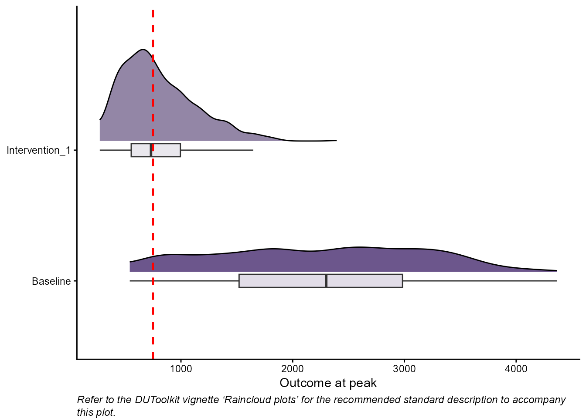

Raincloud plots
rain_plot.RmdThe probability densities of the highest (or lowest if the threshold is a minimum) projected outcome across simulation runs are plotted for each policy alternative alongside corresponding box plots, which indicate the mean and 50th percentile range. These plots are presented collectively on a single graph to facilitate visual comparison of the policy alternatives. The decision threshold is shown directly on the plot as a vertical line to provide a clear reference point for interpreting the outputs.
We use the plot_raincloud() function to generate the
raincloud plots.
# define inputs
tmin <- min(psa_data$Intervention_1[, 1]) # minimum simulation time
tmax <- max(psa_data$Intervention_1[, 1]) # maximum simulation time
Dt_max <- TRUE # indicates the threshold values are maximums
D <- 750 # single threshold value for the peak
## find peak values
peak_values_list <- get_max_min_values(psa_data, tmin, tmax, Dt_max)
# generate raincloud plot
raincloud_plot <- plot_raincloud(peak_values_list, D)
raincloud_plot
Sharing outputs
The raincloud plot can supplement the probability density plots by providing an intuitive and direct visual comparison of the severity of the situation at its expected peak for each policy alternative on a single plot.
We also recommend the following standard description for presenting the raincloud plots to decision-makers. We provide the standard description in paragraph and bullet point form for ease of use.
Standard description
This graph shows the distribution of the highest1 forecasted outcome2 (i.e., the peak3) for each scenario alongside a corresponding box plot which indicates the mean and 50th percentile range. All interventions are displayed on a single graph to allow for visual comparison.
The red dashed line indicates the policy target. The more distribution area located to the right4 of the policy target line, the greater the probability that the outcome5 at its forecasted peak6 will surpass7 the policy target.
Standard description bullet points
This graph shows:
The distribution of the highest8 forecasted outcome9 (i.e., the peak10) for each scenario on a single graph to allow for visual comparison.
A corresponding box plot for each scenario which indicates the mean and 50th percentile range.
The red dashed line indicates the policy target.
The more distribution area located to the right11 of the policy target line, the greater the probability that the outcome12 at its forecasted peak13 will surpass14 the policy target.